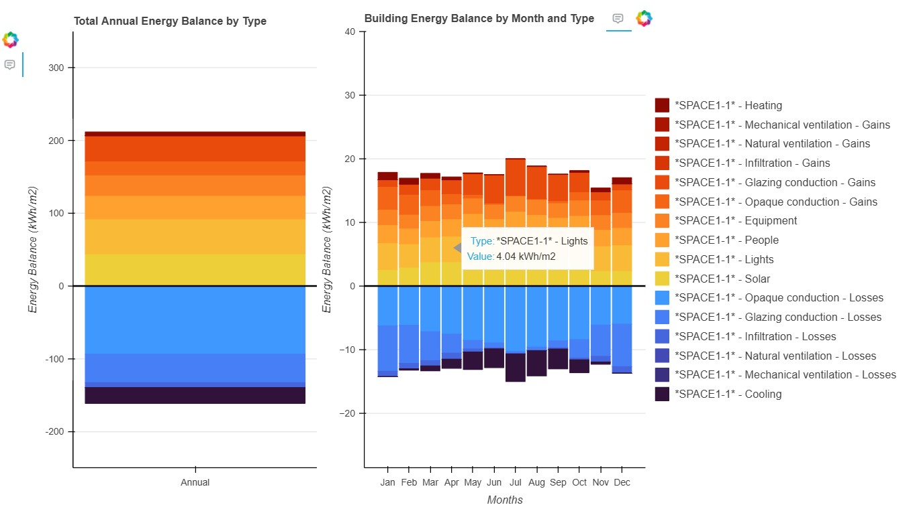
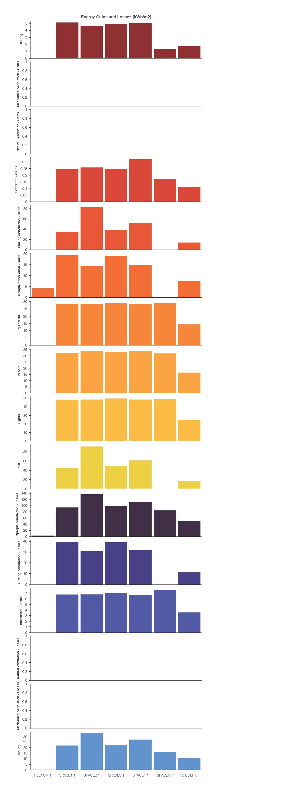
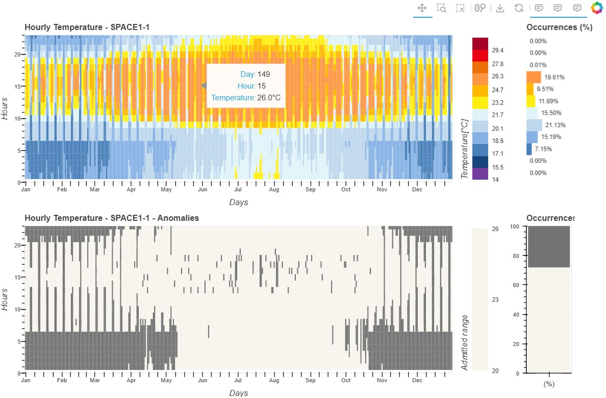
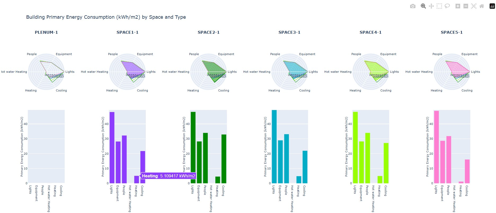

BEPVis Data Visualization Tool
Presentation
The BEPVis data visualization tool streamlines the exploration and analysis of large datasets from building energy simulations. Its main objectives are:
to generate clear, insightful visualizations tailored for expert users,
to support the interpretation of key performance indicators (KPIs),
to facilitate decision-making for building energy optimization,
and to contribute to sustainability and overall operational efficiency.
Five interactive visualization types were implemented and evaluated:
stacked bar chart
heatmap
line chart
radar chart
scatter plot
Due to the diverse design characteristics of these visual forms, the representation of performance indicators and time scales varies according to the analytical purpose of each visualization [1] [2].
The visualizations follow principles of clarity, simplicity, and effective communication. Design choices such as dimensional simplicity, visual balance, and objective representation were guided by established visualization literature [3] [4] [5] [6] [7].
All graphics were developed in Python (VS Code) using Bokeh and Plotly, with a strong focus on interactivity, web-based accessibility, and unbiased interpretation.
This work is part of a doctoral research project at Iuav University of Venice, and represents the first version of a visualization library that will be expanded and refined.
Developed Visualizations
Stacked Bar Chart

This visualization displays the building’s energy balance (kWh) by stacking multiple energy components. Two charts—annual and monthly—are presented side by side to reveal temporal patterns. A unified legend maintains a consistent colour scale across energy types.
The stacked structure allows users to quickly understand how processes such as heating, solar gains, lighting, equipment, people, envelope conduction, natural ventilation, mechanical ventilation, and cooling contribute to total gains and losses. All values are expressed in kWh to ensure comparability.
Bar Chart

The annual energy balance per space (kWh/m²) is shown for each zone. Each bar represents a specific gain or loss component, facilitating spatial comparison. The consistent colour scale reinforces continuity with the stacked bar chart.
This visualization is useful for identifying zones with high thermal loads or inefficiencies and for understanding which processes dominate the energy behaviour of each space.
Line Chart


The line chart shows monthly Predicted Mean Vote (PMV) and Percentage of People Dissatisfied (PPD) values for each space. Each zone is represented by three lines: mean, minimum, and maximum.
Shaded comfort bands and dashed reference lines (EN 15251 / ISO 7730) help identify periods when indoor conditions fall inside or outside acceptable thermal comfort ranges. Interactive hover functions provide detailed metadata for each point.
Heatmap

Following Levitt’s approach [8], this visualization uses colour gradients to represent hourly temperature values (°C) across all days of the year. A secondary heatmap identifies whether each hourly value falls within the recommended comfort range (UNI 10829:1999).
Additional configurations were implemented to present PMV and PPD values for the five studied spaces, with thresholds defined according to ASHRAE and ISO 7730 (PPD < 15%, PMV between -0.7 and +0.7).
Radar Chart

This visualization shows the annual primary energy consumption (kWh) for each zone, broken down into categories such as heating, cooling, domestic hot water, equipment, lighting, and ventilation.
Each zone has its own radar chart, accompanied by a bar chart to improve readability and prevent visual overlap. This dual representation enables quick comparison of energy signatures between spaces.
Scatter Plot

The scatter plot highlights the relationship between outdoor temperature (°C) and hourly heating/cooling ILAS loads (W/m²).
Three time ranges (0–8, 8–19, 19–24) are colour-coded to reveal differences in system behaviour during night-time, daytime, and evening periods. Linear trend lines are included to quantify the strength of the correlation.
This visualization helps assess the responsiveness of HVAC systems and detect possible overheating or overcooling tendencies under varying climatic conditions.
References
Perkhofer, et al., 2020, “Does design matter when visualizing Big Data? An empirical study to investigate the effect of visualization type and interaction use,” J. Manag. Control, vol. 31, no. 1–2, pp. 55–95, doi: 10.1007/S00187-020-00294-0/TABLES/28.
Al-Kababji, et al., 2022, “Interactive visual study for residential energy consumption data,” J. Clean. Prod., vol. 366, p. 132841, doi: 10.1016/J.JCLEPRO.2022.132841.
Shamim, et al., 2014, “Evaluation of opinion visualization techniques,” vol. 14, no. 4, pp. 339–358, doi: 10.1177/1473871614550537.
Murugesan, et al., 2015, “Design criteria for visualization of energy consumption: A systematic literature review,” Sustain. Cities Soc., vol. 18, pp. 1–12, doi: 10.1016/J.SCS.2015.04.009.
Cibulski, et al., 2020, “PAVED: Pareto Front Visualization for Engineering Design,” Comput. Graph. Forum, vol. 39, no. 3, pp. 405–416, doi: 10.1111/CGF.13990.
Few, 2004, “Show Me the Numbers: Designing Tables and Graphs to Enlighten”, First Edit. Analytics Press.
Few, 2006, “Information Dashboard Design: The Effective Visual Communication of Data”, 1st ed. Cambridge (MA): O’Reilly.
Levitt, “Visualizing Climate Data in Excel,” YouTube, 2017. https://www.youtube.com/watch?v=VLSoQy8aXwI (accessed Aug. 22, 2024).